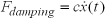
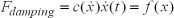

阻尼器将产生阻碍相对运动的力，损耗机械能量。您可以使用弹簧命令在创建弹簧的同时创建阻尼器，也可以使用阻尼器命令来单独创建。
您可以在两个连杆之间、一个连杆与一个现有几何体之间、滑动副或者旋转副上创建阻尼器，您也可以将阻尼器附着到空间上的点。
求解器将正比于速度来应用阻尼。
阻尼系数可以是常数，也可以使用样条函数来定义。
求解器支持下列形式的阻尼：

阻尼系数为常数(当系数类型设置为表达式时)、。

其中 f(x)通过阻尼样条函数来定义。